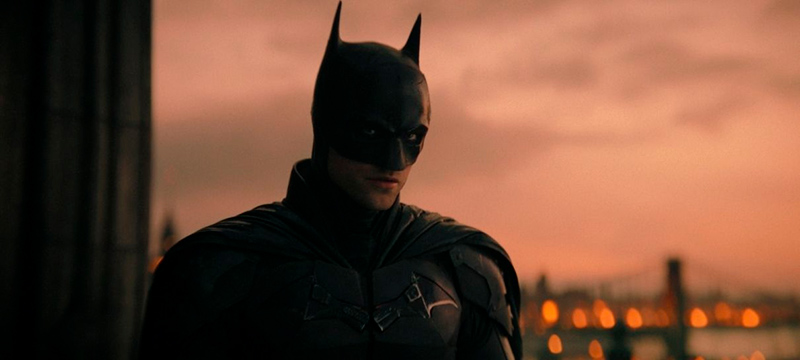

Júlio Contreras
25 de Abril de 2022
Está de volta um dos personagens mais importantes e influentes da história, em seu novo filme: ”The Batman (2022)“. O filme está sendo um sucesso de bilheterias, faturando aproximadamente 480 milhões de dólares em apenas duas semanas.
The Batman acompanha a investigação do Batman com James Gordon da polícia local, buscando um assassino em série com senso de justiça distorcido, que extermina políticos corruptos de Gotham City. O vilão é extremamente inteligente e brinca com Batman, deixando alguns enigmas para o herói desvendar.
O filme traz uma abordagem mais séria e racional do universo, onde os vilões são icônicos, mas são mais realistas e menos fantasiosos. O exemplo disso é o Penguin, mostrando-se um mafioso comum a um icônico vilão.
Consequentemente a isso, a direção optou por utilizar cores mais escuras e uma iluminação mais cinza demonstrando uma cidade fria, obscura, triste e violenta. Corrompido pela cidade Batman está cego por vingança, sendo extremamente deprimido e violento.
Pode-se afirmar a forte presença desse filme no Oscar, podendo ganhar diversos prêmios, pois possuí uma excelente trilha sonora, cenas épicas, além de ser um belíssimo filme. Sua produção espetacular proporcionou isso, com muito investimento financeiro, porém, sua duração é longa quase chegando há três horas de filme, podendo ser cansativo para algumas pessoas.
Conclui-se que é um excelente filme, divertindo e entretendo diversas pessoas ao redor do globo, podendo ser replicado pelas futuras gerações como um clássico.